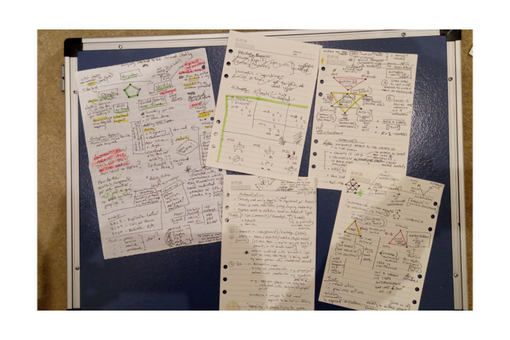
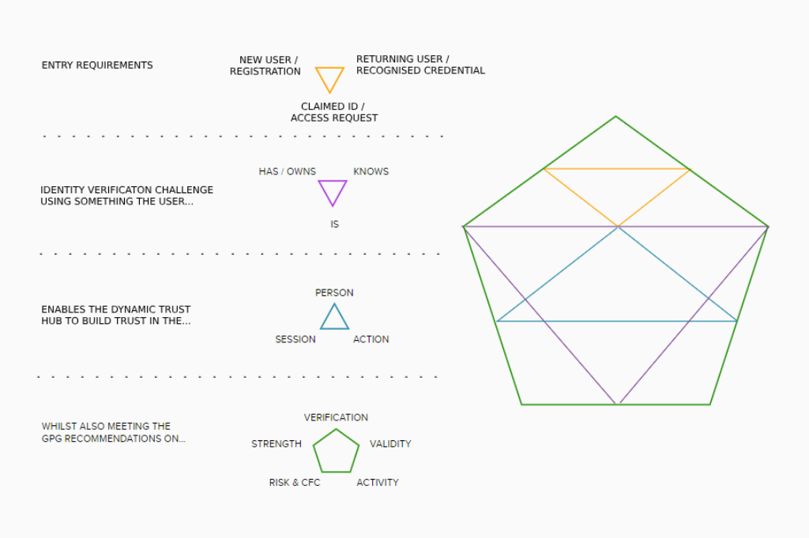
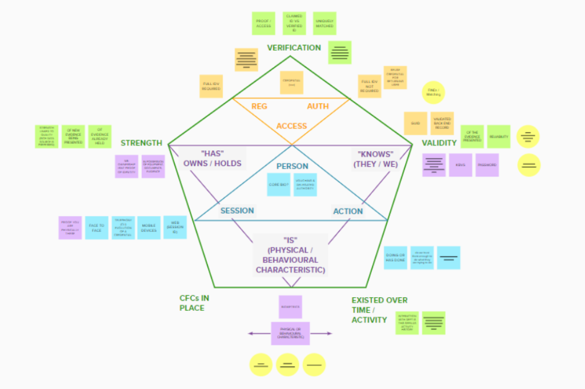
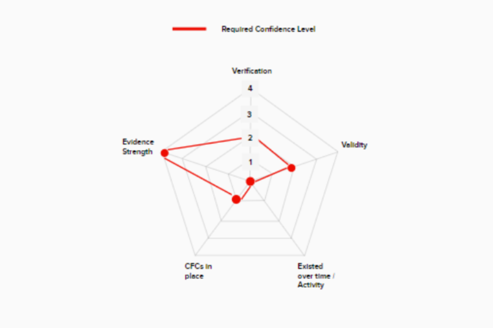
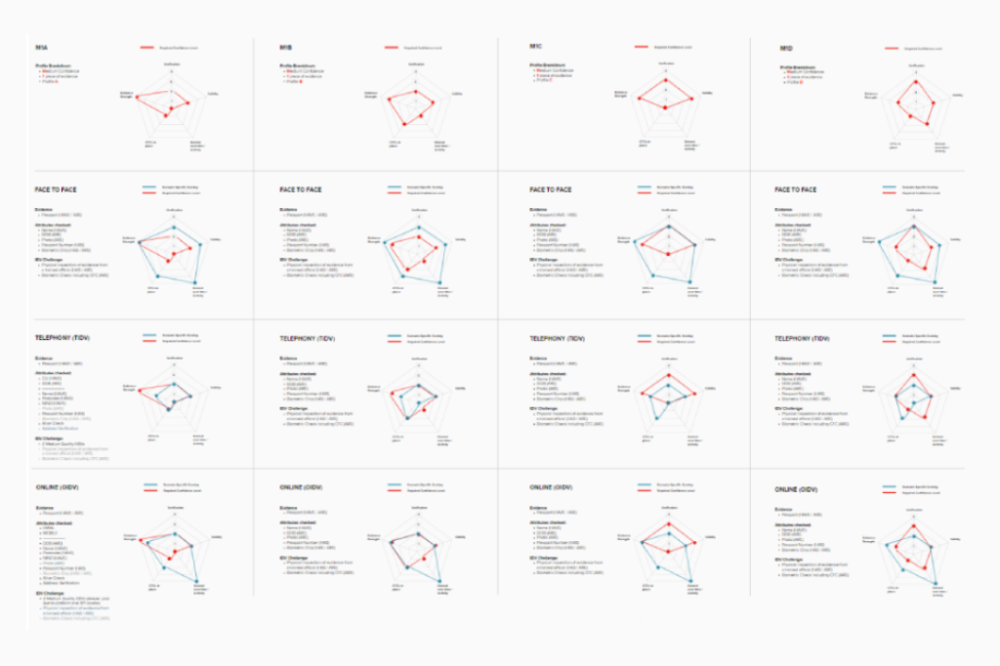

Re-imagining the GDS ‘Good Practice Guides’
An investigation into the elasticity of identity verification.
01
The Problem
In 2012 GDS published its series of Good Practice Guides (GPGs) for providers of identity assurance to Government Services:
- GPG 43: Requirements for Secure Delivery of Online Public Services
- GPG 44: Authentication Credentials in Support of HMG Online Services
- GPG 45: Validating and Verifying the Identity of an Individual
In my previous roles as both a Product Manager and later as an Identity & Trust Specialist, these became critical documents for me to understand, reference and articulate to others.
However, GPG 45 (for example) weighed in at:
- 33 pages (8972 words)
- including a 29 page sub section
- with 32 individual ID profiles (presented as tabular data).
So I think it’s fair to say, these were not considered the most accessible of reads. Even by their own admission (Cabinet Office website), the documents were recognised as being "necessarily quite technical".
02
Reframing the problem
I had already seen a couple of attempts to re-frame this information, for example the digital consultancy Hippo, who opted for a Lego bricks analogy (see below).

But this interpretation always seemed far too rigid to me, especially when dealing with a concept as fluid as identity. Whilst I could appreciate the bricks were meant to be interchangeable. I couldn’t shake the feeling that this should be more about depth and breadth rather than height.
03
What did I do about it?
I focussed on creating a framework that could literally ‘flex’. After all, an identity can be challenged in a variety of ways, for a variety of reasons and across a variety of different channels.
My focus was less about 'how' to achieve a certain score and more about 'why' that score was best suited to certain scenarios and factors.
I also wanted to pay particular attention to language, since my early research had shown this was the number one reason for stakeholder assumptions. The difference between verification, validation and authentication, for example, was a recurring and lengthy bone of contention.


To address these unnecessary distractions, I created a couple of one pagers, which sought to cut through a lot of the noise, acting as anchors for discussions and stakeholder alignment.
04
Research & Collaboration
With these footholds in place, I was then able to return to my initial goal of finding a framework that flexed. In the interests of working in the open, I’ve managed to find some of my original notes and general musings from the numerous meetings I arranged at the time.

05
Divergent thinking
What started to emerge from those early brain dumps, was a series of triangular patterns which reflected the different phases / stages within the identity verification process.

These patterns needed to be encompassed by all 5 key elements of GPG, which (conveniently for me) lent themselves to a pentagon. The following images were my first attempts to transfer those relatively chaotic meeting notes into a usable framework.

However, the 5 GPG components were still just ‘points on my pentagon’ for want of a better phrase. They were linked but they didn’t illustrate the ‘flex’ that I felt was crucial in telling this story.
As a side note, my diagram had also started to look, at best, like a conspiracy theorists wall. Or, at worst (as somebody put it to me), like some kind of occult iconography. So, I decided to pare things back once more.
06
Taking a new approach
I shifted my attention back to the scoring system that underpinned the guides. To clarify, each of the 5 GPG elements are scored against a Profile Criteria. Each profile is made up of the same 3 elements:
- Level of Confidence required (Low, Med, High)
- Pieces of evidence presented (1,2,3 etc)
- Profile ID that matches a specific GPG scoring thresholds (A,B,C etc)
So, for an ID challenge that requires a medium level of confidence, with only one piece of evidence but which also meets the GPG scores as defined by Profile A. You would be permitted to accept ‘M1A’.
But with 32 profiles to choose from, I needed to not only show how these scores could be achieved but also how they could be augmented. It was this elusive 'flex' between channels and scenarios (that for me at least), was lost in the detail of the existing documentation.
So at this point I decided to come full circle and reintroduce my pentagons to represent the M1A profile in the following way:

07
Convergent thinking
Reintroducing the pentagon was the eureka moment for me, as I could now discuss M1A (red) as a pattern rather than a score. But to see the true value of this framework, I needed to treat it like a radar diagram and overlay channel specific scenarios (blue).
In the theoretical example shown below, a citizen is using their passport as a singular piece of evidence in a face-to-face scenario. The relative strength, validity, verification, activity over time and counter fraud checks all score highly (blue), with many exceeding the M1A Profile thresholds (red).
However, this is mainly due to the number of ways that evidence can be checked when face-to-face.
- Photo
- Watermarks
- Hologram patches
- Fluorescent pages
- Biometric chip
- Laser perforated numbers
It is also worth noting that these checks are carried out by a trained official, who has access to all the relevant capabilities needed to perform them e.g. a biometric chip reader etc.
08
The flex between the channels
The image below compares using that same piece of evidence (passport), as part of a telephony challenge instead of face-to-face. Note the 5 GPG elements have now ‘flexed’ to form a new pattern.
Despite the pattern constricting, most of the elements (blue) are still within the limits (red) M1A sets out for verification, validity, activity and counter fraud. However, it now falls short in the ‘Strength’ category moving from a 4 to a 2.

But the evidence itself has not become ‘weaker’, after all it is still a valid UK passport. It's the ways in which that document can be checked via this particular channel that has reduced its score.
The person calling may well be holding that passport in their hands (something you have) but there is no guarantee they are the person the passport was issued to. A telephony agent will not be able to check their photo or other visual cues either. So for these reasons, they might need to augment their challenge with additional knowledge-based verification questions (something you know).
09
What was the output?
Of the 32 profiles available, the image below shows only a tiny cross section. Since each profile needs to be created through 3 different lenses (Face to Face, Telephony and Digital), it would mean showing 96 radar diagrams in total

Hopefully this cross-section is enough of a benchmark for how the full group would appear. Incidentally, the 4 profiles shown here are M1A, M1B, M1C & M1D.
10
What was the impact?
The introduction of this 'flexible framework' allowed stakeholders to consider things in a far more visual way, they were able to worry less about scores and look more closely at best fit.
If a certain pattern looked out of place, it prompted discussions that may have been overlooked if faced with a wall of numbers instead.
The final output earned a nomination for reward and recognition, which was approved by the Identity & Trust Deputy Director (see below).
“Steve joined the Policy Team on an EOI and hit the ground running. Making an immediate positive impact for stakeholders and colleagues. Notably, he utilised his design skills to prepare some new GPG educational material for use with colleagues in wider directorates. His fresh ideas and approach have been both welcomed and highlighted by the Policy Team. He is a positive role model and his willingness to go the extra mile is commendable”
ID&T Deputy Director